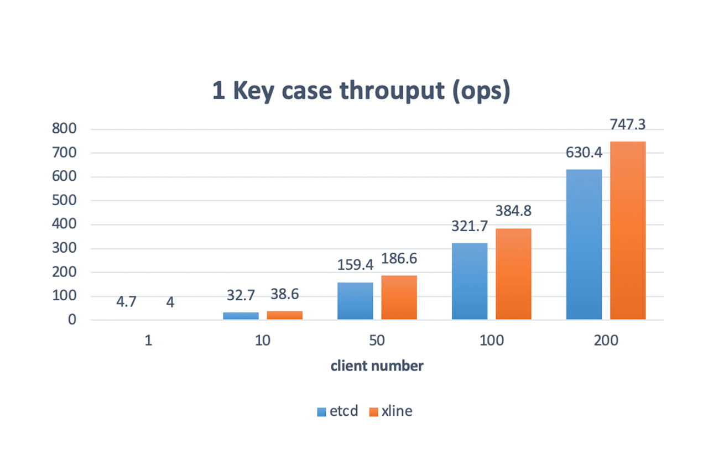
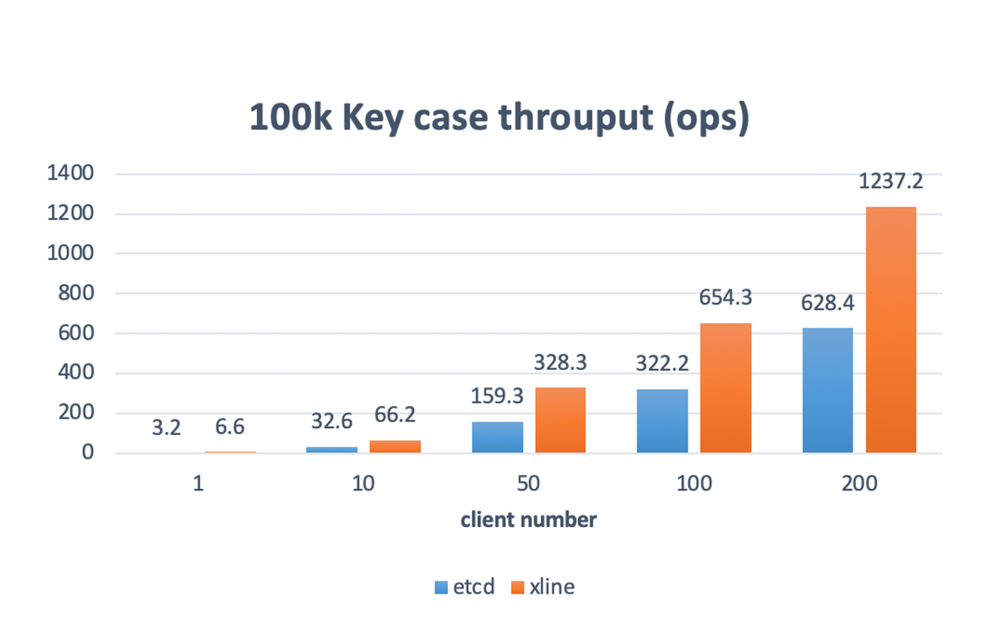

Install
Read the quick start for more information about how to start an xline cluster.
Performance Comparison
We compare Xline with ETCD in a simulated multi-cluster environment. The details of the deployment are shown below.
We compare the performance with two different workloads. One is 1 key case, the other is 100k key space case. Here is the test result.

